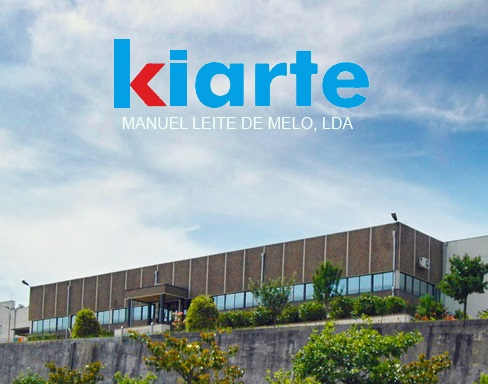
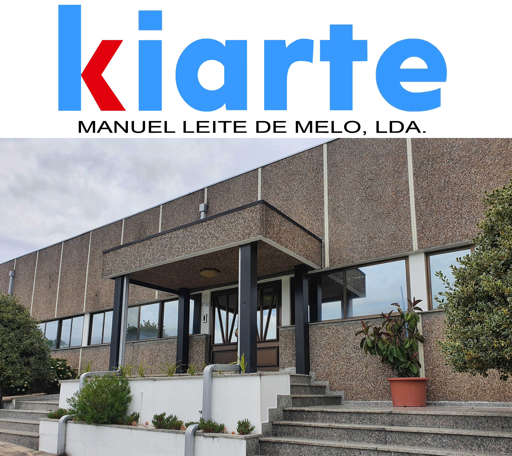

Sobre Nós
A KIARTE é uma fábrica de calçado em Portugal, situada em Felgueiras, que trabalha no setor desde 1987. Ao longo dos anos, construímos uma história assente na experiência, no conhecimento técnico e no cuidado colocado em cada par de sapatos que produzimos.
A fábrica está registada como KIARTE, com o número de contribuinte 501911359. Somos uma empresa aberta, séria e próxima dos nossos clientes, preparada para receber quem nos queira conhecer, visitar o nosso espaço, levantar encomendas ou realizar trocas.
O nosso horário de atendimento é das 09h00 às 12h00 e das 14h00 às 18h00, de segunda a sexta. Também enviamos encomendas por correio e oferecemos portes grátis.


Conceito da Marca
Após anos de criação e desenvolvimento de produtos, a KIARTE criou marcas próprias capazes de responder a diferentes necessidades do mercado. A KIARMED é uma marca desenvolvida pela KIARTE e nasce com um objetivo claro: oferecer calçado de conforto premium, pensado especialmente para quem procura bem estar, estabilidade e uma forma de caminhar mais confortável no dia a dia.
A KIARMED é direcionada para calçado ortopédico e de conforto, indicado para pessoas que têm maior sensibilidade nos pés ou problemas como joanetes, hálux valgo, dores na zona metatársica, cansaço ao caminhar ou necessidade de calçado mais fácil de calçar.
Mais do que produzir sapatos, procuramos criar soluções que respeitam o pé, acompanham o movimento e ajudam cada pessoa a sentir mais segurança, conforto e autonomia.
Benefícios do calçado KIARMED
- Sola antiderrapante: ajuda a aumentar a segurança ao caminhar, reduzindo o risco de escorregamento.
- Sola compensada: proporciona maior estabilidade, melhor distribuição do peso e mais conforto durante o uso diário.
- Palmilha ultra confortável: desenvolvida para oferecer apoio suave, amortecimento e sensação de bem estar ao longo do dia.
- Apoio metatársico: a palmilha pode incluir uma zona de apoio, conhecida como almofada ou apoio metatársico, que ajuda a aliviar a pressão na parte dianteira do pé.
- Fácil de calçar: os modelos são pensados com elástico, velcro ou fecho, facilitando o calçar e o ajustar ao pé.
- Conforto para pés sensíveis: indicado para quem procura mais espaço, adaptação e comodidade em situações como joanetes, hálux valgo ou desconforto nos pés.
O resultado é um calçado confortável, seguro e prático, criado para pessoas que valorizam qualidade, saúde dos pés e confiança em cada passo.
Entrar em contacto